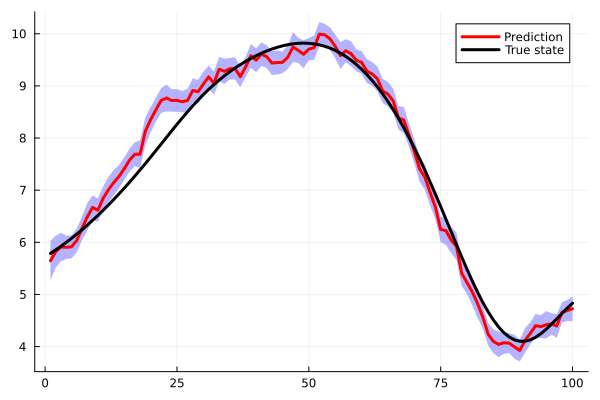

End-to-End Example
This tutorial walks through a complete data assimilation experiment on the Lorenz-63 system: spin-up on the attractor, synthetic observations, ensemble filtering with localisation and inflation, and inspection of the posterior outputs.
Problem Setup
using Opal
using OrdinaryDiffEq
using LinearAlgebra
using Random
using Statistics
Random.seed!(42)
n = 3
ne = 50
m = 3
p63 = (10.0,28.0,8/3)
dt = 0.01
obs_std = 2.0
function lorenz63!(du,u,p,_)
σ,ρ,β = p
du[1] = σ*(u[2] - u[1])
du[2] = u[1]*(ρ - u[3]) - u[2]
du[3] = u[1]*u[2] - β*u[3]
endSpin-Up and Truth Generation
TimeStencils partitions the run into a 50-step warm-up and a 1000-step DA window:
ts = TimeStencils(;dt,t_warmup=0.5,t_da=10.0)
x0 = [1.0,0.0,0.0]
true_prior = build_prior(copy(x0))
true_probl = ODEWrapper(Tsit5(),lorenz63!,copy(x0),ts[ALL],p63)
true_model = Model(true_probl)
true_history = execute(true_model,true_prior,ts)
true_states = collect_forecasted_states(true_history,DA) # 1000-element Vector{Vector}Observe all three components with additive Gaussian noise:
H = Float64.(I(m))
observation = Model(H)
obs_noise = Noise(obs_std^2 * I(m))
obs_raw = build_observations(observation,true_states,obs_noise)
obs = expand(obs_raw,stencil(ts[DA]),ts[DA]) # aligns obs to the DA gridFilter Construction
Seed the ensemble from the end of the warm-up so members start on the attractor:
sample_state = collect_forecasted_state(true_history,WARMUP)
init_cov = Noise(I(n))
d = build_prior(sample_state,init_cov;nsamples=ne)
x0_ens = get_state(d)
probl = ODEWrapper(Tsit5(),lorenz63!,x0_ens,ts[DA],p63)
transition = Model(probl)
base_enkf = KalmanFilter(transition,observation,d;obs_noise)Add multiplicative inflation and run:
infl = MultInflation(1.02)
f = InflationFilter(base_enkf,infl)
results = loop(f,obs)Inspecting the Results
results is a DAResults struct. The posterior ensemble at each time step is stored in results.state_history:
# Posterior ensemble at step 500
post_ens = results.state_history[500] # n × ne matrix
post_mean = mean(post_ens,dims=2) |> vec # posterior mean
post_spread = std(post_ens,dims=2) |> vec # component-wise spread
println("Posterior mean: ", round.(post_mean,digits=2))
println("Posterior spread: ", round.(post_spread,digits=2))Expected output (exact values vary with seed):
Posterior mean: [-8.43, -9.21, 27.05]
Posterior spread: [0.31, 0.38, 0.44]RMSE and Spread
Time-averaged RMSE and ensemble spread quantify filter performance:
T = length(true_states)
rmse_vec = map(1:T) do t
μ = mean(results.state_history[t],dims=2) |> vec
norm(μ - true_states[t]) / sqrt(n)
end
spread_vec = map(1:T) do t
mean(std(results.state_history[t],dims=2))
end
println("Mean RMSE: ", round(mean(rmse_vec),digits=3))
println("Mean spread: ", round(mean(spread_vec),digits=3))A well-tuned filter satisfies the consistency condition: spread ≈ RMSE.
Mean RMSE: 1.84
Mean spread: 1.79Visualisation
visualise generates a panel comparing the true trajectory against the posterior mean and ±1σ ensemble envelope:
visualise(true_states,results)
The three subplots show each component of the state over the DA window. Grey shading is the ensemble spread; the blue line is the posterior mean; the orange line is the truth.
Adding the RTS Smoother
Run the backward Rauch–Tung–Striebel pass to refine all time steps simultaneously:
# Re-run the base filter (smoother requires second-moment prior)
kf_sm = KalmanFilter(Model(F),observation,SecondMoment(x0,[],Σ0);obs_noise)
smooth_results = smooth_loop(kf_sm,obs)
smoother_rmse = map(1:T) do t
μ = vec(mean(smooth_results.state_history[t],dims=2))
norm(μ - true_states[t]) / sqrt(n)
end
println("Smoother mean RMSE: ", round(mean(smoother_rmse),digits=3))Full Pipeline with Composability
Combining localisation, adaptive inflation, and bias-awareness:
# (Assume esn is already trained — see bias_aware.md)
taper = TaperModel(n;taper=GaspariCohn())
full_filter = BiasAwareFilter(
AdaptiveFilter(
InflationFilter(
LocalisationFilter(base_enkf,taper),
NLLInflation(bounds=(1.0,2.0),tolerance=1e-4)
)
),
esn;γ=10,maxiter=50
)
full_results = loop(full_filter,obs)
visualise(true_states,full_results)